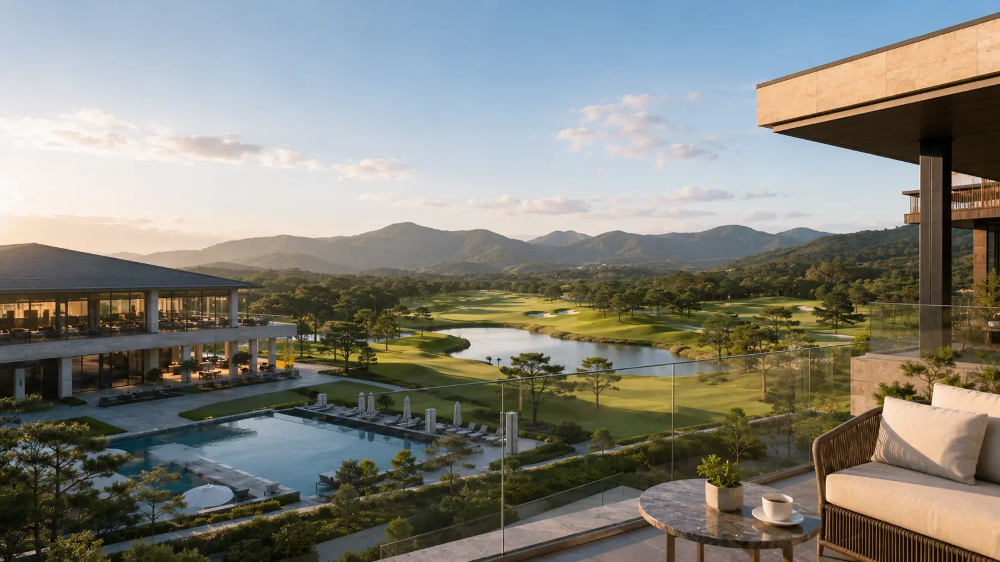

오늘날 골프&리조트 시장은 극적인 전환점을 지나고 있다. 과거 '럭셔리'라는 단어가 프리미엄의 상징이었다면, 지금은 그 의미가 퇴색된 지 오래다. 고급스러운 풀빌라와 전용 골프코스, 미식 다이닝과 아트 갤러리 등을 집약한 시설들이 속속 개발되며, '럭셔리 리조트'라는 수식어는 대부분의 회원권 분양상품에 자연스럽게 붙는다.
그러나 고객의 반응은 기대와 다르다. "비싸게 샀지만 예약이 안 된다", "성수기엔 사용이 불가능하다"는 목소리가 나오고 있다. 그 속에서 씨유레저는 '진짜 프리미엄'의 의미를 되새기며, 고객 경험을 중심으로 한 전략적 기획을 제시하고 있다.

최근 몇 년 사이, 국내 골프&리조트 업계는 새로운 패러다임의 변화를 겪고 있다. 프라이빗 풀빌라, 전용 골프코스, 미식 다이닝, 아트 갤러리 등 고급 요소를 집약한 복합시설들이 속속 개발되고 있으며, '럭셔리 리조트'라는 수식어는 이제 거의 모든 고급 회원권 분양 상품에 자연스럽게 붙는다. 하지만 문제는, 이런 시설들이 실제로 고객들에게 기대한 대로의 경험을 제공하지 못하고 있다는 점이다.
많은 고객들이 겪은 불만은 "예약이 제대로 되지 않는다", "성수기에는 사용이 불가능하다"와 같은 실질적인 문제들이다. 또한, "프라이빗한 서비스를 제공한다고 했지만, 부대시설은 일반 고객들과 공유해야 한다"는 지적도 이어지고 있다.
"우리가 만든 '프리미엄'이 과연
진짜 프리미엄으로 느껴지고 있는가?"
고급화는 '보여주기'가 아닌 '작동 방식'이다
이제는 외형적인 고급화가 아니라, 고객 경험을 중시하는 '진짜 프리미엄'이 중요한 시대가 되었다. 고급화는 단순히 화려한 외모를 보여주는 것이 아니라, '어떻게 작동할 것인가'에 대한 깊은 고민이 필요하다.
글로벌 럭셔리 리조트 브랜드들이 그 좋은 예를 보여주고 있다.
'보이지 않는 서비스'의 상징. 고객이 필요로 할 때 이미 그 자리에 있어 불편을 최소화하는 서비스를 제공하며, 체크인부터 체크아웃까지 아무런 불편을 느끼지 않게 한다.
감성적인 체류 경험을 강조한다. 맞춤형 수면 베개, 계절별 식단, 지역 사회와의 연결을 통해 '여기서만 느낄 수 있는 감정'을 선사하며, 이는 강력한 재방문 요인이 된다.
글로벌 표준을 구축하여 어디에서나 일정한 품질의 서비스를 제공하며, 고객은 신뢰와 기억을 통해 브랜드에 충성한다.
이들이 보여주는 고급화의 본질은 겉모습이 아니라, 고객의 경험을 어떻게 조율할 것인가에 있다. 단순히 외형적인 럭셔리로는 더 이상 고객을 만족시킬 수 없다는 점을 명확히 보여준다.
고객의 진짜 요구는 '소유'가 아닌 '심리적 안심'과 '기억'
고객들이 진정으로 원하는 것은 단순히 '소유'가 아니라, 언제든 만족을 떠올릴 수 있는 심리적 안심과 기억 속에 오래 남는 하루다. 고객들은 '조망권'이나 '면적'보다는, 실제로 해당 공간을 사용했을 때의 가치를 중요시한다.
즉, 고객들이 묻는 질문은 "예약은 원활할까?", "우리 가족이 만족할 수 있을까?", "몇 년 뒤에도 이 가치가 유지될까?"라는 실질적인 것들이다. 고객들은 더 이상 화려한 이미지를 내세운 회원권 상품에 흥미를 느끼지 않는다.
그럼에도 불구하고, 많은 회원권 분양 상품들은 여전히 다음과 같은 방식에 머물러 있다.
화려한 이미지에 의존
자산 가치 강조, 외형 럭셔리, 보여주기식 시설 — 이용 동선이나 가족 구성원 경험, 예약 편의성, 양도 가능성에 대한 기획은 부족하다.
고객 경험 중심 설계
이용 동선, 가족 단위 만족도, 예약 편의성, 자산 보존 — 고객의 시간과 감정을 어떻게 조율할지에 대한 정교한 기획이 핵심이다.
진짜 프리미엄은 고객 경험을 세밀하게 조율하는 전략적 기획에서 탄생한다
이러한 고민에 핵심적인 역할을 하는 것이 바로 '분양 컨설팅'이다. 씨유레저는 회원권 분양을 위한 기획 단계에서부터 고객의 실질적인 요구를 반영한다. 씨유레저의 회원권 분양 전략은 단순한 판매가 아니라, 고객이 이 공간을 어떻게 사용하고, 어떤 경험을 할지를 세밀하게 설계하는 데 중점을 둔다.
고객 세그먼트별 맞춤 혜택
씨유레저는 고객 세그먼트에 따라 맞춤형 혜택을 제공한다. 개인 및 가족 단위 고객에게는 체류형 프로그램과 프라이빗 서비스를 제공하고, 법인 고객에게는 비즈니스 공간과 라운딩 패키지 등을 제안해, 사용 목적에 맞춘 체계적인 상품 구조를 마련한다. 이를 통해 고객들에게 더 많은 선택지를 제공하고, 그들이 원하는 가치를 충족시킬 수 있다.
합리적 차등화로 양측 만족
이용 횟수, 체류일수, 동반인 수 등을 고려하여 합리적인 요금 및 권한 차등화를 실시한다. 이는 고객에게는 맞춤성과 유연성을, 운영자에게는 다층적인 수익 구조를 제공하며, 두 측 모두 만족할 수 있는 시스템을 만들어낸다.
자산 가치 기반의 회원권 분양 유형 제안
씨유레저는 단기적인 수익보다는 장기적인 가치 보존과 양도 가능성에 집중한다. 이를 통해 회원권이 지속 가능한 매력을 유지할 수 있도록 기획한다. 이러한 전략은 단순한 마케팅 수사가 아니라, 고객이 "이 골프장/리조트를 내 공간처럼 느끼도록 만드는 것"을 목표로 한다.
진짜 고급화는 고객의 기억 속에 남는다
'진짜 프리미엄'은 더 이상 가격의 문제가 아니다. 그것은 고객의 시간과 감정, 기억 속에 깊이 스며드는 경험의 언어다.
"여긴 꼭 다시 오고 싶어."
"가족에게 꼭 보여주고 싶은 곳이야."
이 한마디가 그 어떤 화려한 시설도, 높은 분양률도 뛰어넘는 가장 강력한 지표가 된다.
씨유레저가 제시하는 '진짜 프리미엄'은 고객이 평생 간직할 가치를 창조하는 일이다. 보여주기 위한 고급화가 아니라, 고객이 다시 돌아오고 싶은 골프&리조트를 만드는 경험을 위한 고급화이다. 그 시작은 '눈에 보이지 않는 질문'에 얼마나 정교하게 답할 수 있는지에 달려 있다.